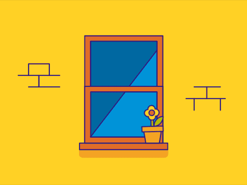
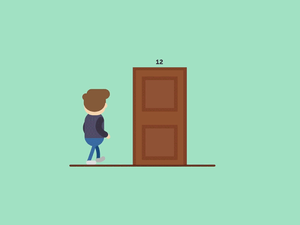

Window-openers VS Door-knockers
Jul 13 '21 • Written by Yassen Shopov
📖 8 minute read
dopamine [ˈdəʊpəmiːn], noun - a compound present in the body as a neurotransmitter and a precursor of other substances including adrenaline. Responsible for allowing you to feel pleasure, satisfaction, and motivation.
With science having advanced a lot in the past decades, the role of the different neurotransmitters in the brain has been well-researched. It’s become clear that a lot of our emotions can be boiled down to a series of chemical reactions in the brain.
Which, I reckon, is awesome.
Because that means that we no longer need to rely on guesswork and spirituality to know why we feel the way we feel. It’s not a 100% trustworthy strategy, but it’s a useful distinction to know that you’ve been scrolling Instagram for hours because you need more dopamine, rather than because you are “lazy and unmotivated”.
And if you monitor yourself frequently and qualitatively enough, you’ll start to notice trends in your behavior. For example, usually, when I sit down to have lunch, I start feeling groggy and sleepy, which makes me more prone to distractions and it’s usually not the best time to do my “deep work” for the day.
How does all that neurochemistry tie in with the title, you may ask?
Well, dopamine turns out to be this huge trigger for our decision-making and action-taking. If we suddenly became numb to dopamine, we would hardly do anything, even eating wouldn’t seem exciting, because there is no “excitement” in our brains anymore. Dopamine makes us associate a given task with its reward, and makes us more prone to actually doing it.
Yet, this has two sides.
Window-openers
Some people fall for this negative feedback path, where they grow more and more impatient, and it becomes harder for them to do difficult and time-consuming tasks unless they see a grand reward on the other end. And even if there is such a reward, they can’t always get themselves motivated enough to reach it. This, as you may guess, makes it incredibly hard for them to reach any of their long-term goals.
These people are the so-called window-openers. It uses the metaphor of a window and a person looking behind it. Windows are transparent, and thus you’re able to see what’s on the other side. A window-opener type of person is only likely to open the window (put in the effort) if they see something interesting (a reward) on the other side.
Now, this is not a bad thing 100% of the time, because if we didn’t seek rewards, we would fall prey to endlessly doing tasks that are of no value to us. Knowing the purpose of a given activity is very important, and shouldn’t be underestimated. Otherwise, we’re likely to grow old and regret, let’s say, working in a certain position all our lives because we never sought a higher purpose.
However, as with any extreme, it is easy to go radical on it. If you only do the things you think will have an immediate reward, that would only limit you further on. One of the most important skills in our age of overconsumption and information overload is being able to focus, and we are slowly but surely shortening our attention spans. Due to the effects of social media, among other things, we are growing more and more impatient, and we tend to simply not do or loathe doing the harder things on our to-do lists.
This impatience may seem irrelevant, but it can surely affect you long-term.
Imagine how you are offered something very rewarding like writing a book, a high-paying position at your company, 6-pack abs. There’s a logical catch though - you’ll need to work your butt off first, without even getting close to the reward for a long while. The more you lean into the window-opener mindset, the less likely you are to accept such a challenge, because of how little patience you have.
And here’s where the more productive mentality comes in.
Door-knockers
To better explain the door-knocker mindset, imagine a door-to-door salesperson. You know, those people in American 90s sitcoms that go from door to door and offer their services to those that open. Those are the same salespeople that often get the door closed in their face, or don’t get it to open at all.
But those are the people who have a much higher exposure to the possibility of hitting the jackpot.
Because once the door is open, it’s your chance to shine and win over a new customer. Sometimes those customers bring in other customers. And just one success may be all you need to kickstart your career and skyrocket. Even if it is not as easy, by increasing the total number of tries you go for, you substantially increase your chances of those tries being successful.
Door-knocking in the 21st century can take many forms. You could be cold-emailing a bunch of potential clients, you could be self-promoting on social media or at public events. Or you could just be building your portfolio publicly, on your personal website, for people to see in real-time and maybe use your services in the future.
It boils down to increasing your success rate in any endeavor by increasing the overall attempts you go for. Yes, this ultimately means failing a lot more too, but that’s just the jazz.
This is where a lot of the sayings like “A winner has fallen more times than the loser has ever tried” come from. And as cliché as they sound, there is some fundamental truth to them.
Door-knockers are much more likely to stick with a difficult task or long-term project because they trust their ability to end up successful and eventually get the reward the window-openers strive for so much.
So all in all, in order to achieve your long-term goals and stay motivated during the long grind, you need to readjust your thinking to that of a door-knocker. In the end, you still end up with the reward the window-openers go for, but at a bigger scale, because you were able to stick with the process.
[8:05]
by Ali Abdaal